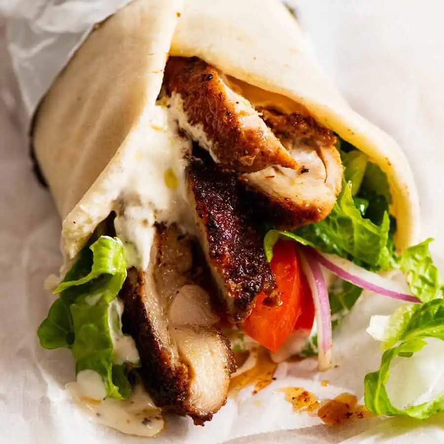

KUZHIMANTHI
No oil is used in cooking the Kuzhimanthi. It's slow-cooked for over two hours in a hole in the ground or kuzhy as we call it in Malayalam.
SHAWARMA
Shawarma is a popular Levantine dish consisting of meat cut into thin slices, stacked in a cone-like shape, and roasted on a slowly-turning vertical rotisserie or spit.
PIZZA

Pizza is a dish of Italian origin consisting of a usually round, flat base of leavened wheat-based dough topped with tomatoes, cheese, and often various other ingredients, which is then baked at a high temperature.
BURGER

A hamburger is a food consisting of fillings —usually a patty of ground meat, typically beef—placed inside a sliced bun or bread roll.Hamburgers are often served with cheese, lettuce, tomato, onion, pickles, bacon, or chilis;frequently placed on sesame seed buns.
ALFAHAM
Alfaham is an Arabian barbecued Chicken. The chicken is marinated with Arabian spice mix-Bezar and barbeque in a charcoal grill or in the oven.Arabic style grilled chicken prepared with a blend of Arabic spice mix along with yogurt and other spices.
NOODLES

Noodles are a type of food made from unleavened dough which is rolled flat and cut, stretched or extruded, into long strips or strings. Noodles can be refrigerated for short-term storage or dried and stored for future use.